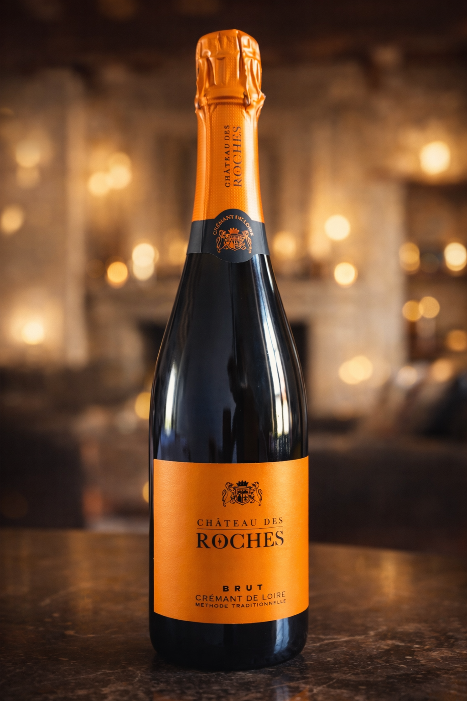
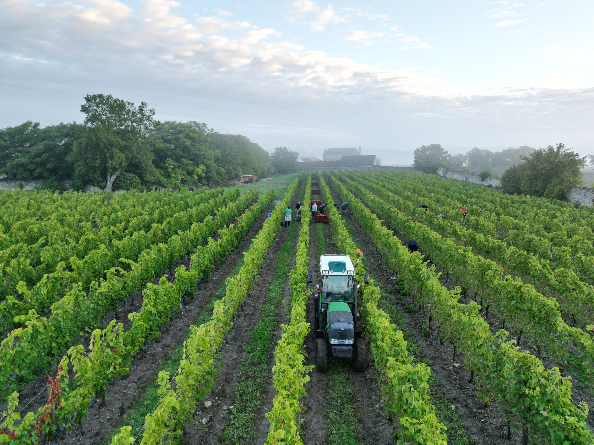

Vaudelnay, Loire Valley
Crémant de Loire · Méthode Traditionnelle
Born from limestone soils five centuries in the making, aged on lees for a minimum of twenty-four months. A sparkling wine of extraordinary refinement.
Discover the Cuvée →
Established 15th Century
Nestled at 137 Rue des Roches in the village of Vaudelnay, Château des Roches stands as a testament to the enduring legacy of Loire Valley viticulture. Its ancient stone walls, enclosing a meticulously maintained walled vineyard, have witnessed the passage of five hundred years of harvests.
The château remains in private hands, entrusted to a family who understands that true luxury is not manufactured — it is inherited, cultivated, and patiently refined with each passing season.

The Land Speaks
The chalky limestone soils of Vaudelnay, shaped over millennia, impart a distinctive mineral signature to every bottle — a whisper of the earth rendered in fine, persistent bubbles.
The chalky tuffeau limestone that underlies Vaudelnay is the very soul of our wine. Ancient and mineral-rich, it endows each cuvée with a crisp, stony freshness and that unmistakable Loire saline finish.
Enclosed within ancient stone walls, our clos vineyard creates a singular microclimate — protecting the vines, concentrating warmth, and nurturing grapes of exceptional complexity and aromatic intensity.
We are committed to the land that sustains us. With organic certification anticipated in 2027, our vineyards are cultivated in absolute harmony with nature — no synthetic treatments, only respect for the living soil.
La Méthode
Hand Harvest
Every grape is selected and harvested by hand, bunch by bunch, in the cool of the early morning. No machine touches our vines. It is work of devotion, and its rewards are felt in every sip.
Méthode Traditionnelle
Our Crémant is crafted using the traditional method — the same painstaking process used for Champagne — ensuring bubbles of extraordinary finesse and a wine of incomparable depth.
24 Months on Lees
Resting on its lees for a minimum of twenty-four months — far exceeding AOC requirements — our wine develops a brioche richness, silky texture, and a persistent, creamy mousse that speaks of true patience.
"Great wine is not made. It is allowed — by soil, by season, and by the unwavering discipline of those who dare to wait."
— Château des Roches, Philosophy of Craft
Our Signature Cuvée
A Crémant de Loire of rare distinction. The nose reveals bright citrus blossom and green apple, evolving toward notes of toasted brioche and fresh hazelnut — the hallmarks of extended lees ageing.
On the palate, the limestone soils assert themselves with a vibrant, mineral freshness, while the mousse — fine, persistent, almost imperceptible — elevates the experience to the extraordinary.
Appellation
Crémant de Loire AOC
Style
Brut
Method
Méthode Traditionnelle
Lees Ageing
Minimum 24 Months
Harvest
Hand Picked
Soil
Limestone (Tuffeau)
Find Us
Château des Roches sits at the edge of the village of Vaudelnay, in the Maine-et-Loire department — a region long celebrated as the garden of France and home to some of its most distinguished wines.
Visits to the estate are available by private appointment only, offering an intimate experience of our cellars, vines, and the château itself — unchanged in character since the fifteenth century.
Address
137 Rue des Roches
137 Rue des Roches
Vaudelnay, 49260
Maine-et-Loire, France
The Experience
A symphony of aromas and flavours, each rooted in the ancient limestone soils of Vaudelnay and shaped by time.
Private Enquiries
Château des Roches is produced in strictly limited quantities. To enquire about private allocations, cellar visits, or wholesale partnerships, please write to us directly and our maître de chai will be in touch.
137 Rue des Roches, Vaudelnay, France 49260